La importancia de usar el control remoto de android.
Si estás leyendo este texto sin duda ya estas disfrutando de tu Latino Kodi Ultimate desde tu TV Box, Smart TV, teléfono móvil o raspberry pi. Sabrás entonces que en muchas ocasiones es bastante complicado moverse por los menús usando ciertos tipos de control remoto. Esto es bastante comprensible, tomando en cuenta que la mayoría de ellos no fueron diseñados para funcionar con Kodi, sin embargo existe un complemento que nos ayudará a movernos de manera más fluida por Kodi, disfrutar de sus capacidades y a la vez tener control total sobre él. Es importante mencionar que la función en el control android Enviar texto que permite digitar los textos en el móvil en lugar de directamente en Kodi no es compatible con todos los dispositivos o skins. En mi caso funcionó con otro skin pero con Aeon Nox me fue imposible hacerlo funcionar.
Poniendonos manos a la obra, el nombre de la app que utilizaremos es Kore. Algunos puntos a tomar en cuenta es que tu tablet o móvil debe estar en la misma red donde usarás Kodi, de otro modo no será imposible establecer la conexión.
Para comenzar deberemos instalar Kore, la aplicación no tiene ningun costo en la Play store.
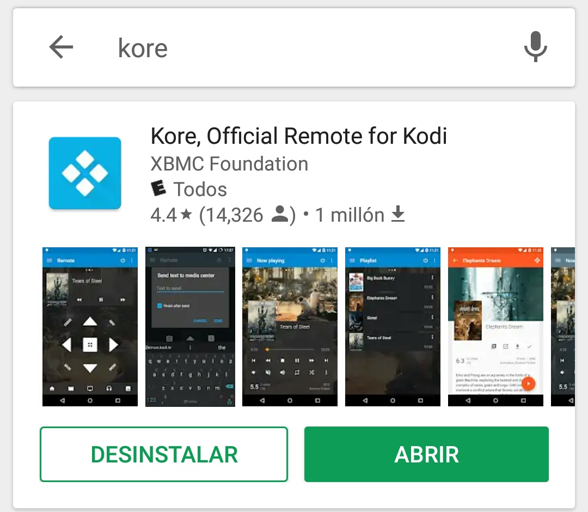Una vez Kore ha sido instalado procederemos a configurar nuestro Kodi.
El primer paso será ingresar a la sección de Sistema desde la pantalla principal.
Posteriormente deberemos ingresar a Servicios.
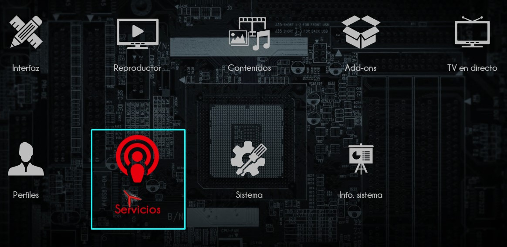Ahora debemos seleccionar Control lo que nos interesa son los parámetros que se encuentran a su derecha.
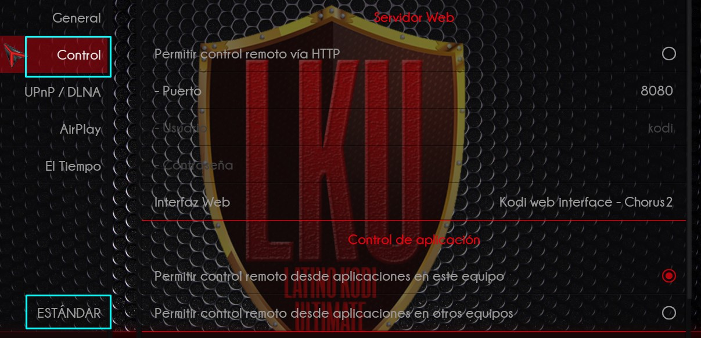Estos parámetros deben ser cambiados como sigue: Activar permitir control remoto via HTTP, El puerto debe ser 8080 y el nombre de usuario Kodi La contraseña por default esta en blanco.
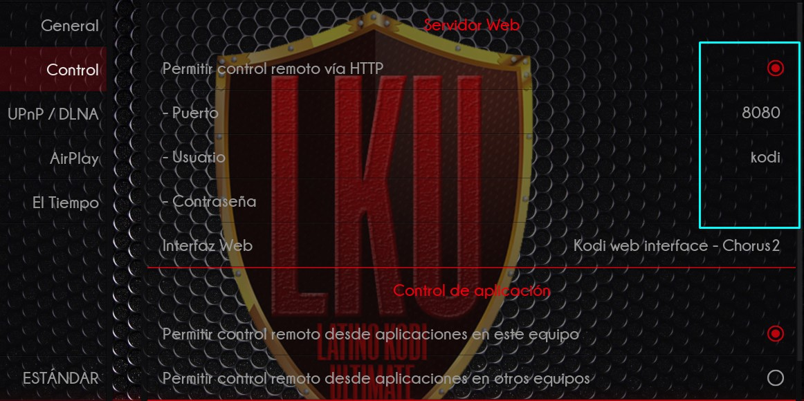Ahora vamos atras, siempre dentro de la misma sección de Sistema y seleccionaremos Info. sistema.
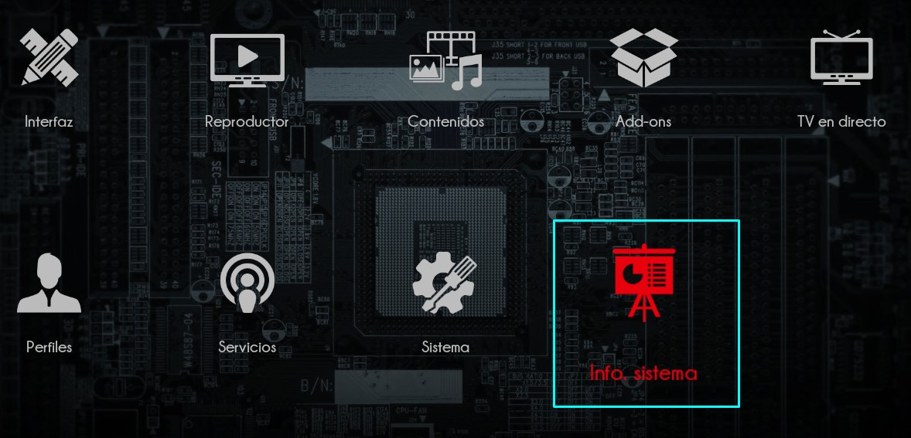Ahora debemos ir hasta la sección de Red debemos tomar nota de El numéro que sigue a Dirección de IP: en este ejemplo es: 192.168.1.8 puede que en tu caso sea la misma o diferente, el último número cambia.
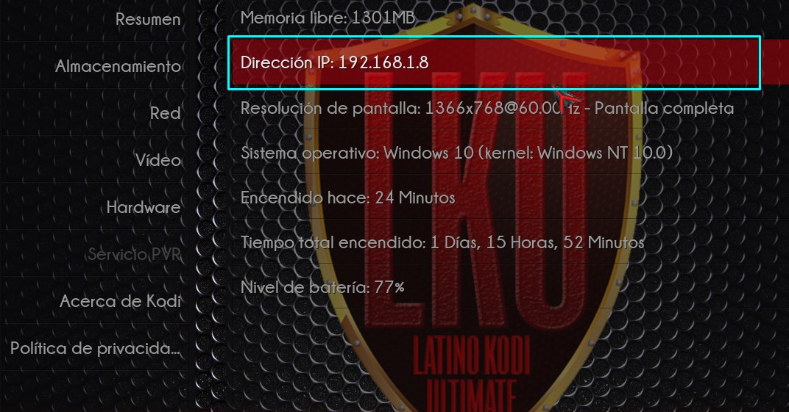Si has llegado hasta este punto excelente, solo nos falta configurar Kore, recuerda tener a la mano tu número de IP.
Conectando Kore con nuestro kodi
Si ya tienes instalado Kore el próximo paso será abrirlo, tendrás acceso a la siguiente pantalla.
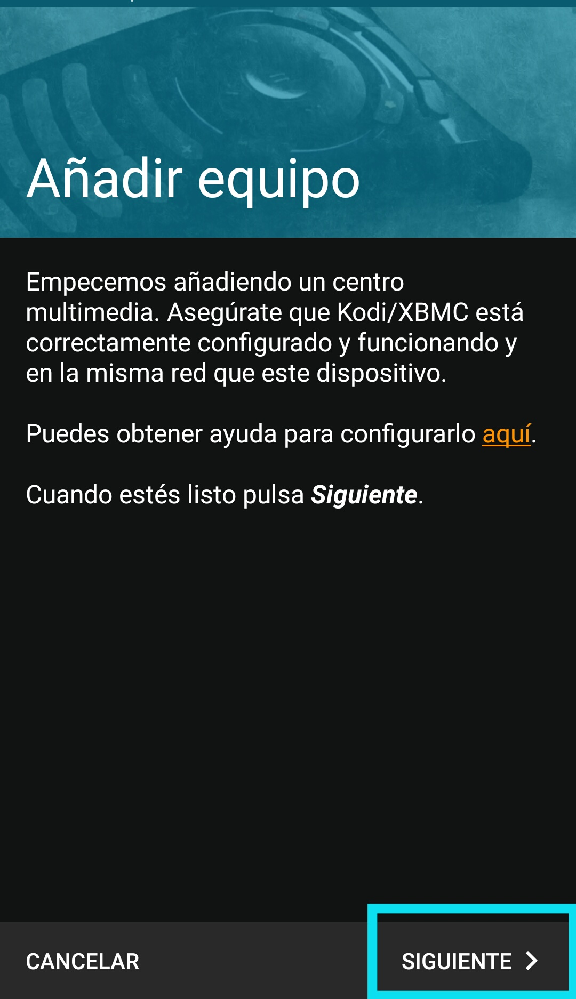Simplemente selecciona Siguiente Aparecerá un mensaje de buscando dispositivos, no te preocupes sino encuentra nada, es normal. Pasado esto te mostrara la siguiente pantalla
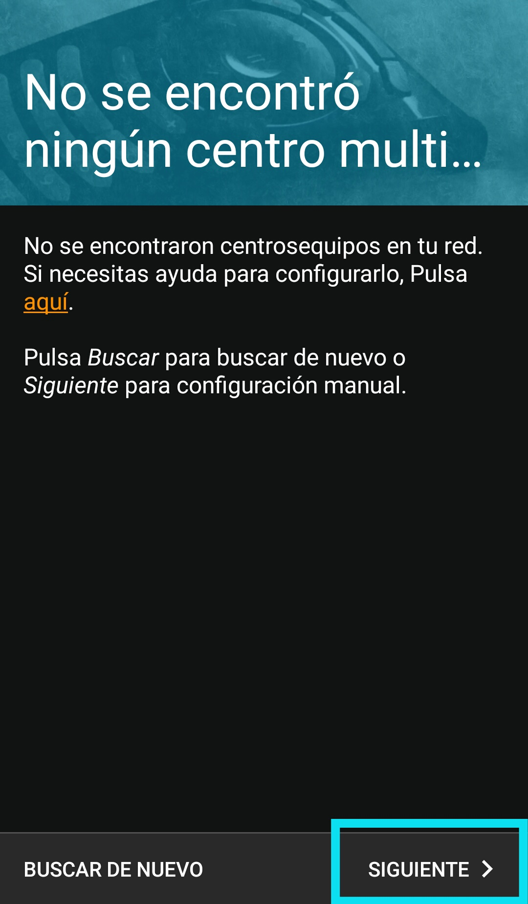Clic en Siguiente nuevamente.
En la siguiente pantalla configuraremos los datos para tener acceso, debes llenar los campos como sigue, recuerda que debes colocar la IP que obtuviste previamente en tu Kodi.
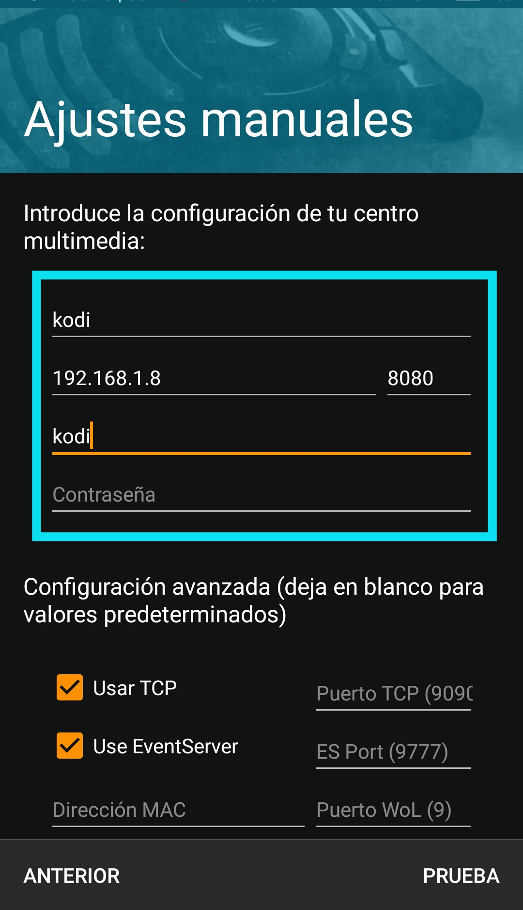Como último paso simplemente tienes que hacer click en Prueba, si seguiste los pasos indicados, aparecera un mensaje en Kodi indicando que se ha establecido la conexión y te aparecera el siguiente menú en pantalla de Kore
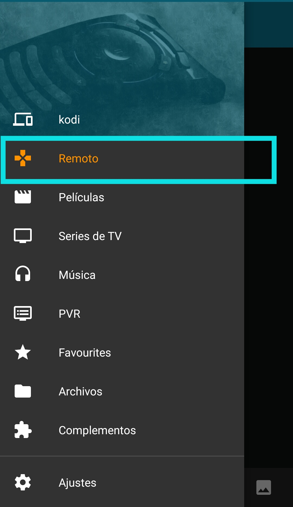Nos interesa la opción de Remoto Seleccionalo y tendrás acceso a moverte por los menú con las flechas, reproducir música almacenada en tu kodi, etc.
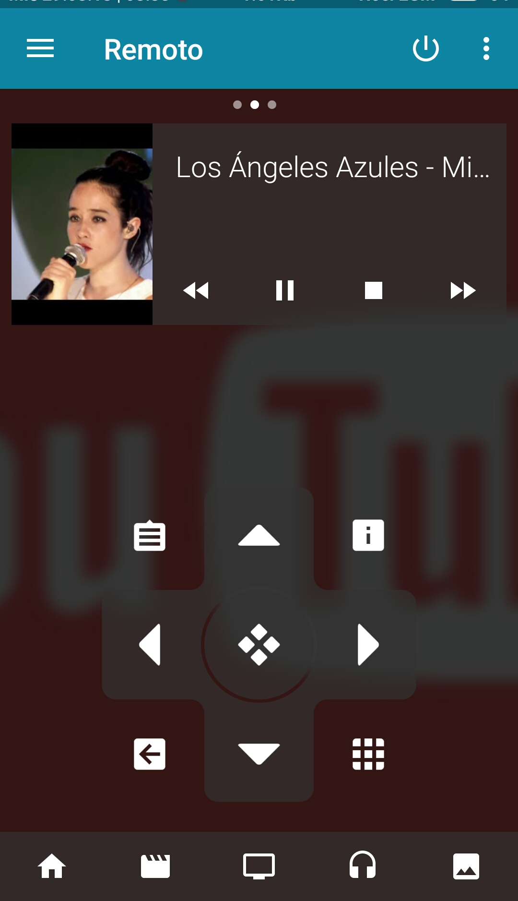Una de sus ventajas principales es retroceder y adelantar el reproductor de manera precisa.
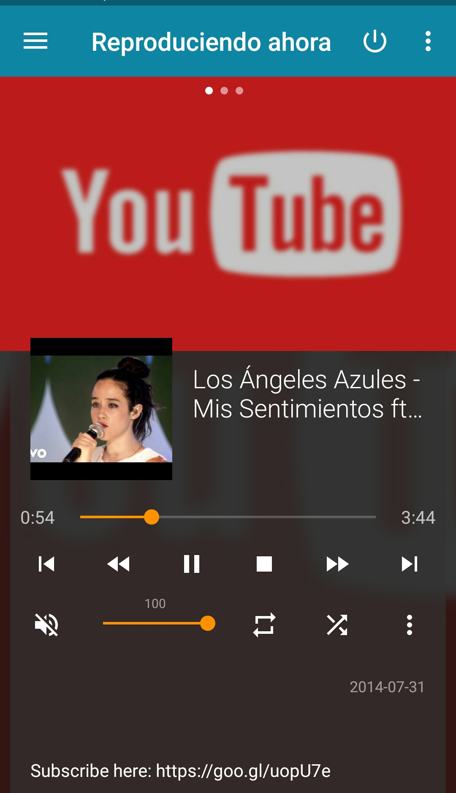Los invito a experimentar las opciones que tiene disponible esta herramienta, se que a mas de uno le será dee gran ayuda.